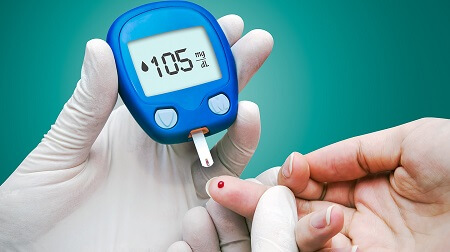

Hallo an alle! Mein Name ist Anna Moritz, ich bin 46 Jahre alt. Ich arbeite in einer Konditorei und habe zwei Kinder. Ich finde mein Leben wirklich fröhlich und glänzend! Aber wegen Diabetes ist irgendwann das Ende meines strahlenden Lebens gekommen.

In der Regel beginnen solche Geschichten mit einer Krankengeschichte... Nun, mir wurde im Alter von 24 Jahren Diabetes diagnostiziert. Das lustigste ist, dass, obwohl ich in einer Konditorei arbeite, war ich immer den Süßigkeiten absolut gleichgültig. Ich habe jedoch meine Schwächen - ich habe immer Würstchen mit Ketchup geliebt (als ich zum ersten Mal einen Hotdog probierte, dann verliebte ich mich einfach in dieses Essen). Ich esse noch sehr gerne Fleisch.
Natürlich fing ich an, zuzunehmen, aber ehrlich gesagt, machte ich mir keine Sorgen, denn mein Mann sagte, dass ich für ihn trotzdem die beste bin. Ansonsten war alles gut, ich habe nicht geraucht und Alkohol nicht missbraucht...
Ich werde euch keine Details erzählen. Ich denke, diese Empfindungen sind vielen Menschen mit Diabetes vertraut. Zuerst fangen Sie an, mehr als normal müde zu werden und schließlich denken Sie, dass es nur mit der Arbeit verbunden ist. Sie haben Kopfschmerzen, wollen schlafen, die Umwelt beeinflusst und der Immunität wird schwächer.
Ich hatte Angst, als ich bemerkte, dass ich an das Gewicht verliere, ohne Anstrengungen aus meiner Seite. Am Anfang war ich natürlich froh, dass meine alte Jeans jetzt mir gut passen, aber danach verstand ich, etwas stimmt nicht. Ich fing an, viel Wasser zu trinken und häufiger auf die Toilette zu laufen. Sobald ich die Zeit hatte, ging ich zum Arzt. Der Therapeut sagte, dass ich einen Endokrinologen besuchen muss. Dann wurde es festgestellt, dass ich Typ 2 des Diabetes habe.
Meine erste Reaktion war: nun, das ist unmöglich! Gestern war alles normal, und heute muss ich mein Leben komplett verändern.
Das Schwierigste war wahrscheinlich zuzugeben, dass die Veränderungen an die Oberfläche traten und es unmöglich war, ihnen zu entkommen. Obwohl ich einen sündigen Gedanke hatte, dass es besser wäre, wenn ich nicht von meiner Krankheit erfahren würde. Aber ich musste mit diesem Wissen weiterleben!
Der Kampf gegen Diabetes ist vor allem der Kampf gegen sich selbst!
Meine Behandlung begann mit traditionellen Medikamenten, um den Zuckerspiegel zu kontrollieren, Ernährungsumstellungen und kleinen Übungen... Aber ehrlich gesagt war ich zu faul. Grundsätzlich schien es mir, dass ich gar nichts machen kann, also physisch war ich zu schwach, um Sport zu treiben, oder ogar die einfachsten alltäglichen Sachen. Und selbst meine Lieblingsarbeit brachte keine Freude.
Meine ganze Welt war auf Teststreifen beschränkt, wenn der Zucker zumindest ein wenig näher an der normalen war, dann konnte ich etwas tun, sonst fühlte ich mich bis zum Ende des Tages unterdrückt. Ich musste ständig ins Krankenhaus laufen, wie zu mir nach Hause.
Ich denke, viele haben genau das gleiche durchgemacht, aber mit den Komplikationen, die die Krankheit begleiten, wie diabetische Geschwüre oder Sehstörungen...
Aber ich hatte Glück. Ich konnte einen Weg finden, um Diabetes wirklich loszuwerden! Ja, es ist unmöglich, es zu heilen, ich weiß, aber es gibt einen Weg, der dazu führt, dass Sie sich nicht mehr an die Krankheit erinnern müssen.
Ich hörte zufällig von - ich wartete in der Warteschlange im Laden und hörte, wie zwei Frauen sagten, dass die Mutter eines von ihnen Diabetes loswurde. Das Lauschen ist natürlich gar nicht gut, aber das war für mich eine wichtige Frage, und ich konnte nicht widerstehen. Ich wandte mich an, entschuldigte mich und fragte, was das Mittel es ist. So habe ich von erfahren.
Seine antidiabetisch wirksamen Substanzen helfen, den Glukosespiegel zu senken und die notwendigen Hormone zu produzieren. Sie enthalten neben organischen Säuren große Mengen an Antioxidantien, Vitaminen und Spurenelementen. Mit diesem Wirkstoffsatz werden die Vitamine gut aufgenommen, die Arbeit des Verdauungstrakts verbessert und die Immunität wir stärker. Außerdem enthält Polyphenole und Flavonoide. All dies normalisiert den Zucker-, Cholesterin- und Triglyceridspiegel, erhöht die Lipoproteinspiegel, wirkt antioxidativ und beugt vielen Entzündungsprozessen bei Diabetes vor.

Als ich mit der Einnahme des Arzneimittels anfing, fiel mir auf, dass der Zuckerspiegel allmählich sinkt. Dann (als ich es absichtlich nicht zweimal einnahm, um herauszufinden, was passieren würde), fand ich, dass der Zuckerspiegel normal gehalten wurde (es war näher an der oberen Grenze, aber es ist normal!) Auch ohne zusätzliche Einnahme von ! Außerdem bemerkte ich, dass mein Blutdruck normalisiert wurde, und er war immer etwas höher als die Norm.
Also ich kann mit Sicherheit sagen: Diabetes ist behandelbar und es besteht keine Notwendigkeit, die Krankheit in Israel, den USA oder anderswo zu behandeln. Ich bestelle immer auf der offiziellen Website, hier ist der Link. Außerdem kommt die Bestellung immer schnell an. Wenn jemand Angst vor der Bestellung im Internet hat, müssen Sie erst nach Erhalt der Bestellung bezahlen.
Also, meine lieben Freunde im Unglück, wir haben die Möglichkeit, gesund zu werden! Und es wäre dumm, das nicht zu verwenden, als eine zweite Chance, die Gesundheit, die wir bekommen haben, zurückzugewinnen. Aber natürlich ist es wichtig, nicht nur Diabetes zu heilen, sondern auch darüber nachzudenken, wie unser Leben im wesentlichen gut ist! Kümmern Sie sich um sich selbst und genießen Sie das Leben!
Kommentare:
Max, es ist wahrscheinlich möglich. Wenn Sie bestellen werden, fragen Sie den Manager und er erzählt alles ausführlich.